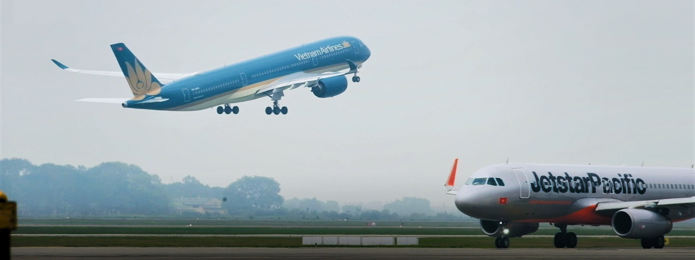
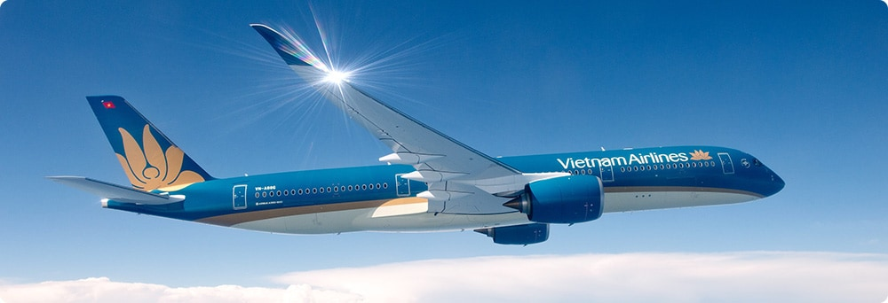
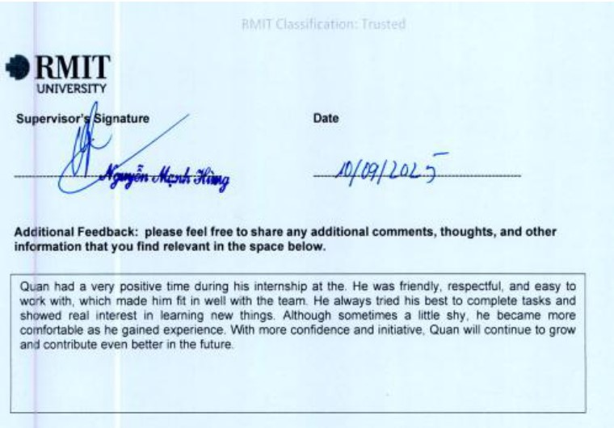
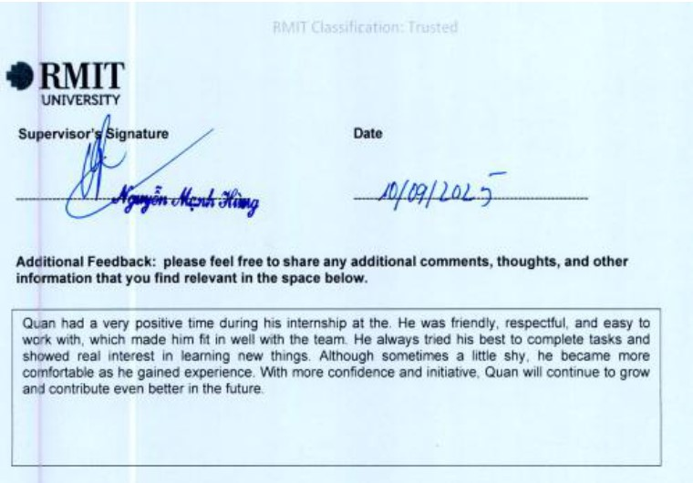

Giới thiệu
About Me
Xin chào! Tôi là Đỗ Hoàng Quân, tốt nghiệp
Cử nhân Khoa học Ứng dụng chuyên ngành Hàng không
tại Đại học RMIT.
Hello! My name is Do Hoang Quan. I hold a
Bachelor of Applied Science in Aviation
from RMIT University.
Trong quá trình học tập và thực tập, tôi đã tích lũy được kiến thức nền tảng
vững chắc trong lĩnh vực hàng không, đặc biệt là
an toàn – khai thác – bảo dưỡng và vận hành.
Throughout my academic studies and internships, I have built a strong foundation
in aviation, particularly in
safety, operations, maintenance, and aircraft systems.
Tôi từng thực tập tại
Pacific Airlines (Safety, Security & Quality Assurance Department)
và Vietjet Aviation Academy, nơi tôi tham gia các hoạt động
liên quan đến đào tạo, điều tra sự cố hàng không và
xây dựng ngân hàng câu hỏi kỹ thuật cho máy bay A330.
I completed internships at
Pacific Airlines (Safety, Security & Quality Assurance Department)
and Vietjet Aviation Academy, where I was involved in
aviation training, incident investigation, and
developing technical question banks for the Airbus A330.
Tôi là người chăm chỉ, có trách nhiệm, ham học hỏi,
có khả năng làm việc nhóm tốt và sẵn sàng thích nghi
với môi trường làm việc có áp lực cao.
Tôi mong muốn phát triển sự nghiệp lâu dài và đóng góp
cho hoạt động khai thác an toàn, hiệu quả,
đặc biệt tại Sân bay Long Thành trong tương lai.
I am a responsible, hardworking, and highly motivated individual with strong teamwork skills.
I am able to adapt well to high-pressure working environments and aspire to develop a long-term
career contributing to safe and efficient aviation operations, particularly at
Long Thanh International Airport in the future.
Hiện tại, tôi đang tìm kiếm cơ hội làm việc ở các vị trí sau:
I am currently seeking opportunities for the following positions:
-
Nhân viên điều phối lịch trình (Rostering Officer)
-
Lập lịch phân công (Crew Rostering):
Xây dựng lịch trình làm việc hàng tháng hoặc hàng tuần cho
nhân viên phi hành đoàn, đảm bảo mỗi chuyến bay có đủ định biên
theo quy định.
-
Đảm bảo tuân thủ pháp lý:
Kiểm tra lịch làm việc nhằm tuân thủ các quy định an toàn bay của
Cục Hàng không, bao gồm giới hạn giờ bay, thời gian nghỉ ngơi tối thiểu
và hiệu lực chứng chỉ chuyên môn.
-
Tối ưu hóa nguồn lực:
Sắp xếp lịch trình hiệu quả, giảm thiểu chi phí lưu trú, đi lại
và đảm bảo phân bổ công việc công bằng.
-
Xử lý biến động:
Phối hợp với bộ phận điều hành bay để điều chỉnh lịch trình khi xảy ra
các tình huống như hủy chuyến, delay hoặc nhân sự nghỉ ốm đột xuất.
-
Quản lý đào tạo:
Sắp xếp thời gian cho phi hành đoàn tham gia các khóa huấn luyện định kỳ,
kiểm tra giả định (simulator) mà không làm ảnh hưởng đến hoạt động khai thác bay.
-
Rostering Officer
-
Crew Rostering:
Developing monthly or weekly work schedules for flight crew members,
ensuring that each flight is staffed according to regulatory requirements.
-
Regulatory Compliance:
Reviewing work schedules to comply with aviation safety regulations from
the Civil Aviation Authority, including flight hour limits, minimum rest periods,
and validity of professional certifications.
-
Resource Optimization:
Efficiently arranging schedules to minimize accommodation and travel costs,
and ensuring fair workload distribution.
-
Handling Changes:
Coordinating with flight operations to adjust schedules in case of flight cancellations,
delays, or unexpected crew absences.
-
Training Management:
Scheduling flight crew for periodic training sessions and simulator checks
without affecting flight operations.
-
Nhân viên điều độ / khai thác bay (Dispatch Officer)
-
Lập kế hoạch bay (Operational Flight Plan – OFP):
Tính toán đường bay tối ưu, độ cao, vận tốc và lượng nhiên liệu cần thiết
dựa trên trọng tải, quãng đường và điều kiện khai thác.
-
Phân tích khí tượng:
Theo dõi và đánh giá điều kiện thời tiết tại sân bay đi,
sân bay đến và các sân bay dự bị nhằm hỗ trợ quyết định cất cánh
hoặc điều chỉnh lộ trình bay.
-
Giám sát hành trình bay:
Theo dõi vị trí và tình trạng chuyến bay liên tục từ khi cất cánh
đến khi hạ cánh, hỗ trợ phi công xử lý các tình huống bất thường
hoặc khẩn cấp.
-
Phối hợp vận hành:
Đóng vai trò cầu nối thông tin giữa phi công,
bộ phận kỹ thuật, phục vụ mặt đất
và các cơ quan quản lý điều hành bay.
-
Dispatch Officer
-
Flight Planning (OFP):
Calculating optimal routes, altitudes, cruising speed,
and required fuel based on payload, distance, and operational conditions.
-
Meteorological Analysis:
Monitoring weather conditions at departure,
destination, and alternate airports to support
go/no-go decisions and route adjustments.
-
Flight Monitoring:
Continuously tracking flight status from takeoff to landing,
assisting pilots in abnormal or emergency situations.
-
Operational Coordination:
Acting as a communication link between pilots,
maintenance teams, ground handling,
and air traffic authorities.
-
Nhân viên Cân bằng trọng tải (Load Control)
-
Lập kế hoạch xếp tải:
Tính toán phân bổ vị trí hành khách, hành lý, hàng hóa và bưu phẩm vào các hầm hàng.
-
Kiểm soát trọng tâm (CG):
Đảm bảo máy bay luôn nằm trong giới hạn thăng bằng an toàn để cất cánh, bay và hạ cánh.
-
Phát hành Loadsheet:
Lập bản cân bằng trọng tải cuối cùng và gửi cho cơ trưởng ký xác nhận trước khi đóng cửa tàu bay.
-
Phối hợp:
Gửi số liệu xếp tải (LIR) cho bộ phận bốc xếp dưới sân đậu để thực hiện chất xếp đúng sơ đồ.
-
Load Control Officer
-
Load Planning:
Calculating passenger, baggage, cargo, and mail distribution in the aircraft holds.
-
Center of Gravity (CG) Control:
Ensuring the aircraft remains within safe balance limits for takeoff, flight, and landing.
-
Loadsheet Issuance:
Preparing the final loadsheet and sending it to the Captain for approval before aircraft doors close.
-
Coordination:
Sending load information (LIR) to ramp handling teams to ensure proper loading according to plan.
-
Nhân viên Điều phối sân đậu (Ramp Coordinator)
-
Giám sát tại chỗ:
Có mặt tại chân tàu bay để kiểm soát toàn bộ quy trình phục vụ mặt đất (tra nạp nhiên liệu, vệ sinh, suất ăn, bốc xếp).
-
Quản lý thời gian (Turnaround):
Đảm bảo các bộ phận hoàn thành công việc đúng tiến độ để tàu bay khởi hành đúng giờ (OTP).
-
Xử lý sự cố:
Giải quyết các phát sinh ngay tại sân đậu như chậm hành lý, thiếu trang thiết bị hoặc sự cố kỹ thuật đột xuất.
-
Báo cáo:
Ghi nhận thời gian bắt đầu/kết thúc các dịch vụ để làm cơ sở dữ liệu vận hành.
-
Ramp Coordinator
-
On-Site Supervision:
Being present at the aircraft stand to oversee all ground handling operations (fueling, cleaning, catering, loading).
-
Turnaround Management:
Ensuring all departments complete tasks on schedule for on-time departure (OTP).
-
Issue Handling:
Resolving problems at the ramp such as delayed baggage, missing equipment, or unexpected technical issues.
-
Reporting:
Recording service start/end times to maintain operational data.
-
Nhân viên liên lạc mặt đất (Headset)
-
Liên lạc với Tổ lái:
Sử dụng hệ thống tai nghe kết nối với buồng lái để trao đổi với phi công trong quá trình chuẩn bị khởi hành.
-
Giám sát khởi động động cơ:
Quan sát bên ngoài và thông báo cho phi công tình trạng động cơ khi bắt đầu nổ máy.
-
Điều phối đẩy lùi (Pushback):
Phối hợp giữa xe kéo và phi công để đẩy máy bay từ vị trí đỗ ra đường lăn an toàn.
-
Tín hiệu cuối cùng:
Thực hiện quy trình rút chốt an toàn (pin), giơ cao cho phi công thấy và vẫy tay xác nhận máy bay an toàn để tự lăn bánh.
-
Headset / Interphone Officer
-
Communication with Flight Crew:
Using headset system to communicate with pilots during pre-departure preparation.
-
Engine Start Monitoring:
Observing outside and reporting to pilots engine status at startup (fire, smoke, or leaks).
-
Pushback Coordination:
Coordinating between tow vehicles and pilots to safely push the aircraft from stand to taxiway.
-
Final Signals:
Completing safety pin removal procedures, raising signals for pilots, and giving visual confirmation that aircraft is safe for pushback.

Lời muốn nói
Personal Statement
Tôi mong muốn tìm kiếm một cơ hội làm việc phù hợp để có thể vận dụng
kiến thức đã được đào tạo cũng như những kinh nghiệm thực tế đã tích lũy
trong quá trình học tập và thực tập.
I am seeking a suitable job opportunity where I can apply the knowledge
gained through my academic training as well as the practical experience
accumulated during my studies and internships.
Nếu được trao cơ hội, tôi cam kết sẽ luôn nỗ lực hết mình,
chủ động học hỏi và hoàn thành tốt mọi nhiệm vụ được giao,
góp phần vào sự phát triển chung của đơn vị và đảm bảo
hoạt động khai thác an toàn, hiệu quả.
If given the opportunity, I am committed to giving my best effort,
proactively learning, and successfully completing all assigned tasks,
contributing to the organization’s overall development while ensuring
safe and efficient operational performance.



 
